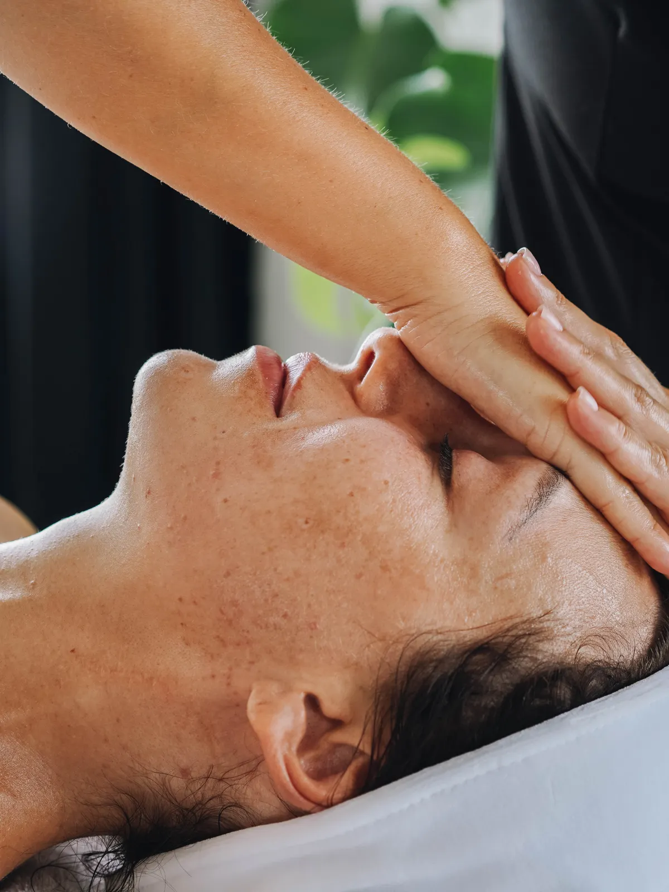
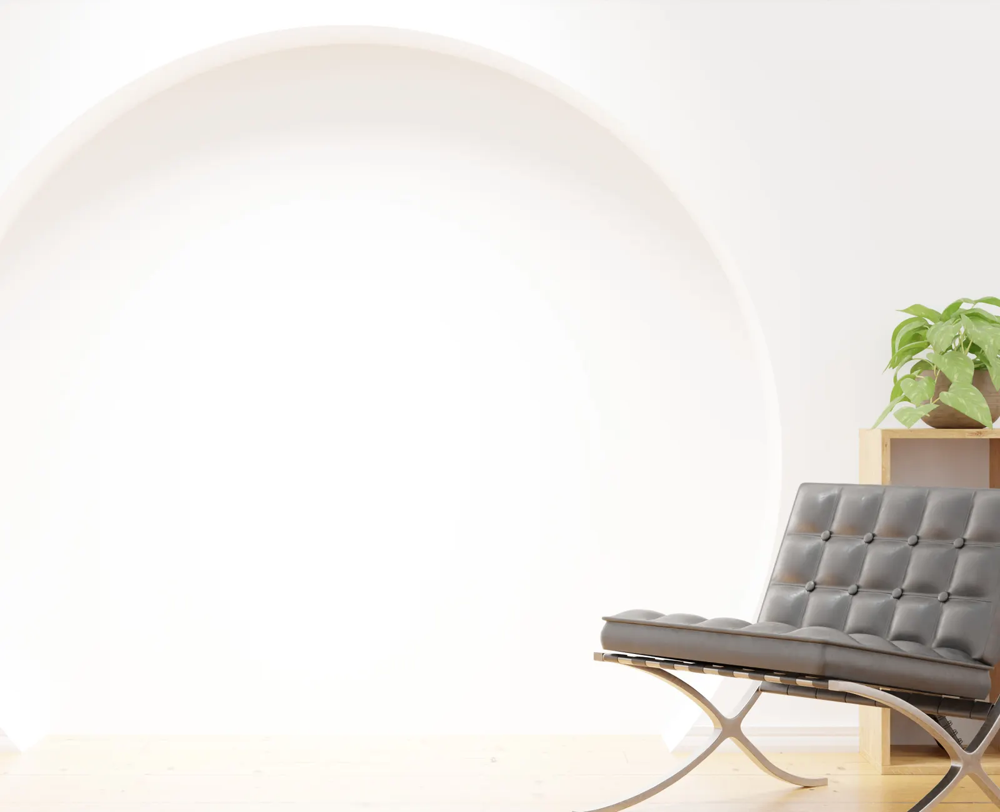
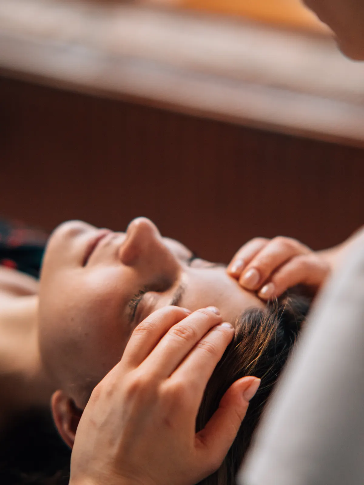
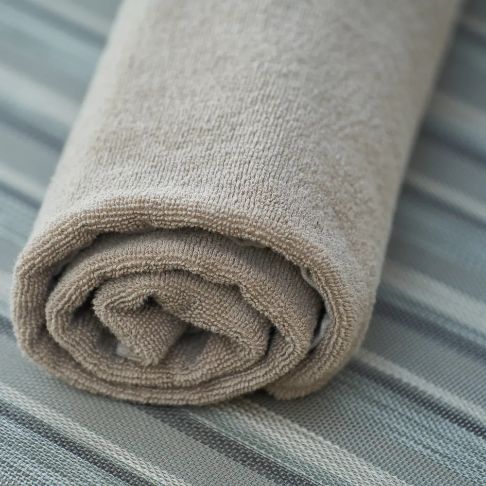

01
Tratamientos faciales
Limpiezas profundas, hidratación y protocolos de cosmiatría dermatológica pensados para la piel de cada persona — con un diagnóstico real antes de cada sesión.
Consultar por este servicioCosmiatría · Head spa · Miramar
Cosmiatría dermatológica, tratamientos capilares y experiencias de relajación en un espacio pensado para que el tiempo se detenga.

Quiénes somos
Head spa Miramar nace de la idea de que cuidar la piel y el cabello puede ser, también, un momento de calma. Combinamos cosmiatría dermatológica con rituales de relajación en un espacio minimalista, inspirado en la pausa y el detalle de la estética oriental.
Cada sesión empieza con un diagnóstico real, no con un protocolo genérico — porque cada piel y cada cabello llegan con su propia historia.
Servicios

Limpiezas profundas, hidratación y protocolos de cosmiatría dermatológica pensados para la piel de cada persona — con un diagnóstico real antes de cada sesión.
Consultar por este servicio
Masajes de cuero cabelludo y rituales capilares inspirados en el head spa japonés: cuidan el cabello y relajan la mente en la misma sesión.
Consultar por este servicioSesiones pensadas para desconectar: aromas, silencio y un ritmo pausado que acompaña cada tratamiento, del principio al final.
Consultar por este servicioCómo es una sesión
Empezamos por escuchar: piel, cabello y lo que necesitás en esta sesión puntual.
Cada protocolo se adapta al momento — manos, tiempo y productos pensados para vos.
La sesión termina, pero la calma se queda. Así cerramos cada ritual.
Protocolos de cosmiatría dermatológica pensados para cada tipo de piel.
Un espacio minimalista donde cada sesión se toma su tiempo, sin apuro.
Rituales de cuero cabelludo que relajan tanto como cuidan.
Turnos coordinados por WhatsApp, sin vueltas ni formularios.

Nos eligen
“Entré estresada y salí con la cabeza en otro lado. El head spa es una experiencia distinta a cualquier masaje que probé antes.”
“El diagnóstico antes del facial se nota: no es un tratamiento genérico, es pensado para mi piel.”
“El lugar ya relaja antes de que empiece la sesión. Volví tres veces en un mes.”
Preguntas frecuentes
Sí, cada sesión empieza con un diagnóstico breve para adaptar el protocolo a tu piel.
Es un ritual de cuidado capilar con masaje de cuero cabelludo, pensado para cuidar el cabello y relajar al mismo tiempo.
Depende del tratamiento — te contamos la duración exacta al coordinar el turno por WhatsApp.
Trabajamos en la zona de Miramar — coordinamos la dirección exacta por WhatsApp.
Escribinos por WhatsApp con el tratamiento que te interesa y coordinamos día y horario.
Head spa Miramar
Contanos qué necesitás — piel, cabello o simplemente un momento de pausa — y coordinamos tu turno por WhatsApp.
Reservar por WhatsApp